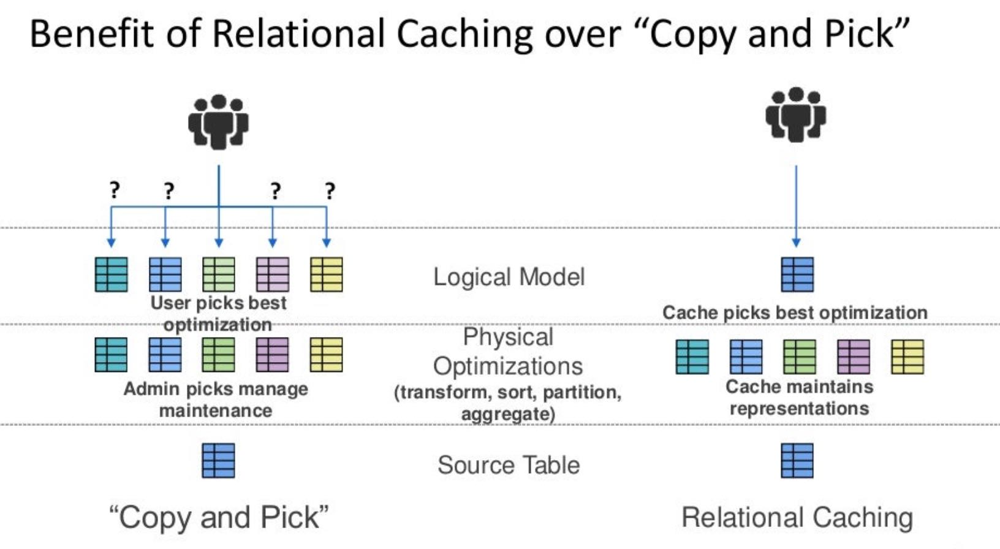
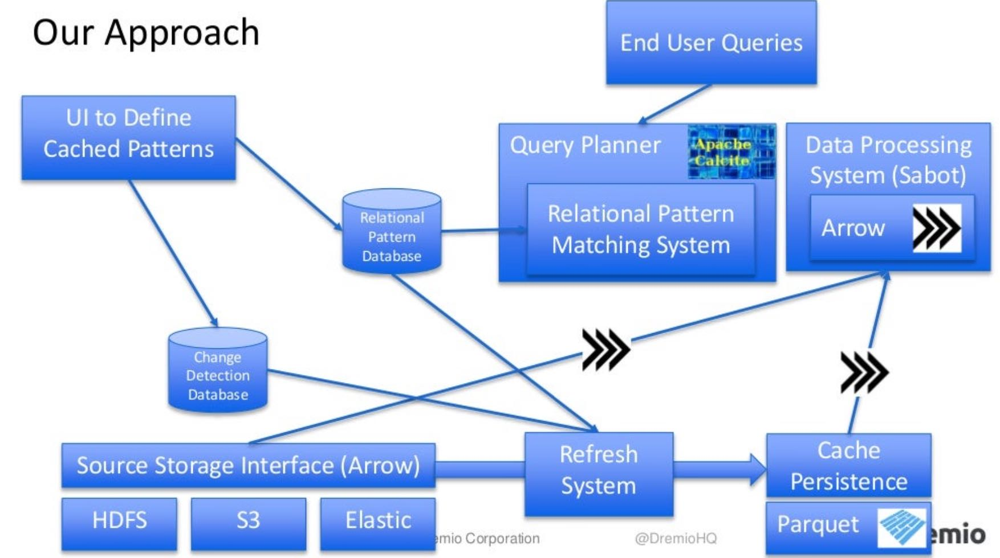
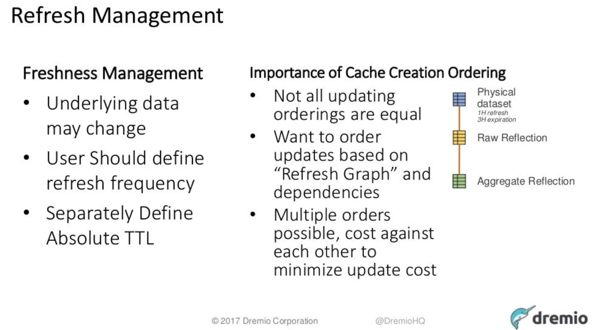

Using Apache Arrow, Calcite, and Parquet to Build a Relational Cache
Types of Caching
- In Memory File Pinning. /tmpfs
- Columnar Disk Caching. Json -> Parquet快速分析
- In-Memory Block Caching. kenerl buffer cache
- Near-CPU Data Caching. parquet/arrow in cache
- Cube-Based Relational Caching. 根据聚合规则进行预计算，一般是直接使用
- Arbitrary Relational Caching. 将各种预计算拼凑起来
Relational Caching相比于手工维护视图的好处

Dremio Relational Caching架构图，如何选择MV则是由Calcite来决定的包括:
- Aggregation Rollup. 使用预聚合数据
- Join/Aggregation 将Agg下推过Join, 这样可以尽可能使用Agg Rollup
- Costing & Partitioning Benefits. 如果有partition key的话，partition key上还可以做筛选

在刷新MV上可以选择合适的顺序进行刷新"Refresh Graph". Dremio底层使用Iceberg格式，是不是也是因为这个容易用来维护MV，这样实现上不用重写物化视图对应的文件。
